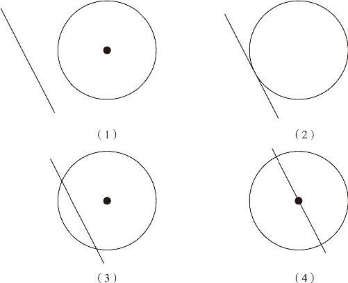
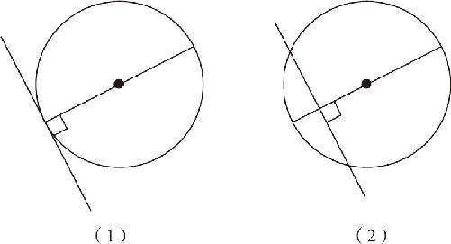
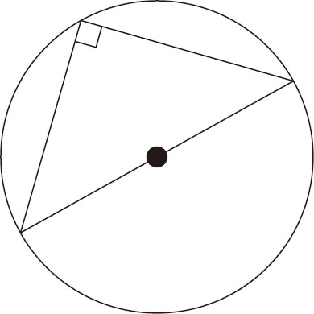
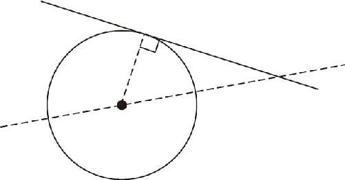
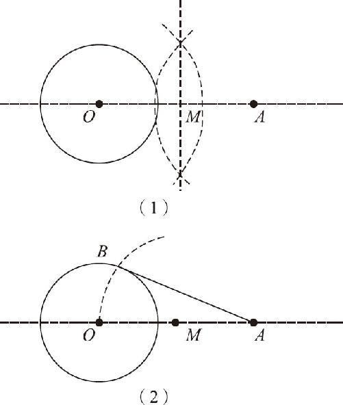

接下来，要研究一下圆和直线的关系：如果我们先在白纸上作一个圆，然后随便画上几条直线就会发现，根据圆和直线的距离不同，它们之间存在有四种关系：当距离非常远的时候［如图10－3（1）所示］，直线就位于圆的外面，和圆周没有任何交点，这是“八竿子打不着”的关系，就不讨论了．接下来，我们逐步把直线向圆的方向靠近：

图10－3
在逐步靠近的过程中，我们就会发现，总有那么一个时刻，圆和直线刚好挨在一起了［如图10－3（2）所示］，此时，圆和直线有且仅有一个交点，我们把这种关系叫作相切；顺便说一下，我一直认为“相切”这个词汇很不确切，这直线明明只是刚刚和圆贴到一块儿，没有把圆切下来一部分，为什么要把这种关系叫相切呢？传统习惯就是这样，而且我们还把和圆贴在一起的直线叫作圆的切线．
如果这条直线向着圆心的位置继续移动又会产生什么结果？它就会把圆切割成两个部分，同时这条直线就会和这个圆产生两个交点，这两个交点之间也会卡住一截线段，于是，我们就把这条直线叫作割线，割线在圆弧中间卡住的线段叫作弦．［如图10－3（3）（4）所示］请注意，当直线把圆切开了以后，这条直线不叫“切线”，而是叫“割线”！按道理说，“切”和“割”这两个动作根本没有什么区别，它们不都是把一个东西劈成两半吗？但是在圆和直线的关系之中，我们就要把和圆贴在一起的线叫作切线，把已经切成两半的线叫作割线．这个怪异的习惯称呼，千万不要记混了！切线、割线和圆之间又有什么关系呢？
如图10－4（1）所示，切线垂直于经过切点的直径．这是由于圆是高度对称的，同时圆的切线是一条直线，经过180°的翻转以后，直线也可以重合在一起，所以，圆和它的切线经过对称的翻转以后，得到的肯定就是相互重合的图形．既然是相互重合了，说明这条切线和圆都被均匀地一分为二了，直线一分为二得到的是直角，圆一分为二得到的是它的直径．所以，过切点的垂线一定经过圆心，经过切点的直径也肯定是垂直于切线的，这就是圆的切线的基本性质．

图10－4
同样，割线割出来的弦也有这种对称的特点．如图10－4（2）所示，如果作一条弦的垂直平分线就会发现，这个垂直平分线肯定也是经过圆心的．为什么呢？因为弦和它切下来的圆弧都是左右对称的关系，既然垂直平分线能把弦一分为二，肯定也会把对应的弧线平分了，自然它就把整个圆也平分了．这就是弦的基本性质：弦的垂直平分线经过圆心，垂直于弦的半径也一定会把弦平分．
关于切线和弦的性质定理，都有一套严格的证明过程，由于圆这种图形的对称性实在太直观了，只需要做一个简单描述就可以了．我们的学习过程，也是循序渐进的：当学习平行线的时候，刚刚接触证明过程，每一个证明步骤都非常严格，因为在那个阶段，我们关注的重点不是平行线的性质本身，而是几何学的总体特征；入门以后，再学起东西来就是一目十行了．过去可能用十天时间才能学习一节的课程，学到最后的阶段，每一天都会学十天的课程．任何一门课程都有一定的门槛，一开始的时候，只能慢慢入门，通过逐步引导，找到这门课的感觉，所以讲得比较细，在这种状态下会感觉书越读越厚；一旦形成了对这门课程的整体认识，就可以像通过一个全等的定理把尺规作图的绝大部分知识融会贯通起来一样，越到最后学得就越快，同一本书也就越读越薄了．
下面，我们继续分析圆的性质：
当这条直线离圆心的距离减小到0以后就会穿过圆心，显然，穿过圆心的直线段就是直径．虽然看上去是直线，但直径也对应一个圆心角，只不过圆心角的大小是180°．既然是圆心角，它就一定有自己对着的圆周角：如果我们随便从圆弧上找一个点，把这个点和直径的两端点一连，就会发现因为圆周角等于圆心角的一半，所以直径对着的圆周角，一定等于一个直角，因为直径的圆心角是180°，一半肯定就是90°了，这就是直径的基本性质．（如图10－5所示）理解了直径的圆周角性质以后，就可以利用它来做一件事：经过圆外一点，作已知圆的切线．

图10－5
对于圆的切线问题，如果要求不是很严格的话，只需要拿着直尺比一比、转一转，直线经过已知点，并且和已知圆相切就可以了．作为一个逻辑严谨的作图方法，这样的操作是不可取的，因为圆上的点有无数个，当直线逐步靠近圆的时候，我们很难分清到底哪一个点是它们的切点．所以要作切线，还得从切线的基本性质出发，通过两条线的交点，把切点找出来．
如图10－6所示，过切点的半径垂直于切线．这就意味着，如果把圆外一点和圆心及切点连结起来，应该是一个直角三角形．同时这个直角三角形的斜边，就是已知点到圆心的连线，而它的两条直角边分别是圆的半径及我们要作的切线．由于圆心和已知点都是固定的，所以很容易得出直角三角形的斜边．由于半径是已知的，也知道了一条直角边的长度，只是切线的长度不知道．由于直径对应的圆周角是直角，可以用这个斜边长度为直径画一个圆，这个圆上任意一点到斜边上两点的连线都是直径的圆周角，直径的圆周角是直角，所以这个圆上的任何一点都满足直角三角形的条件．这个圆一作出来，和原来的圆就会有两个交点了，连结任何一个交点和已知点，得到的就是圆的切线．具体的操作步骤如下：

图10－6
如图10－7所示，已知圆点O 和圆外一点A ，求一条经过A 点的切线AB ．

图10－7
第一步，连结OA ，并作出OA 的垂直平分线，交OA 于点M ．
第二步，以M 为圆心，以MO 长为半径画圆，交圆O 于B 点，连结AB ，直线AB 即为所求．
证明过程如下：
∵M 为OA 中点，且MO 为半径，
∴OA 为圆弧OB 的直径，
∴∠OBA 为直角（直径的圆周角为直角）．
∵B 是圆O 上一点，
∴OB 为半径．
又∵OB ⊥AB （已证），
∴AB 是圆O 的切线．
以上就是通过尺规作图方法作已知圆的切线的步骤．实际上，直径的圆周角带来的帮助，远不止作一条切线这么简单．